Phase 7: bodega chests
Not live yet. Like Phases 1 to 6, this reaches players only when the place is published from Studio.
What was asked
- The free bodega becomes a small box. The next tiers are stone, steel and gold, all the size of a chest, because today's big bodega is exposed to too many players.
- Locked on 29 Sep: tiers add storage capacity, and Ginto is bought with Peso or a pass. The roadmap also asked to keep
OwnerIdand aPrimaryParton the models (the Phase 3 banga attaches to those), to move Stone Bodega pass owners up to Bakal as goodwill, and to restore the quick-testBodega.AxeDamage = 20. - The four models were built first and shown to the owner, who approved them ("continue phase 7") before they were wired in.
What changed
1. Four chests instead of huts
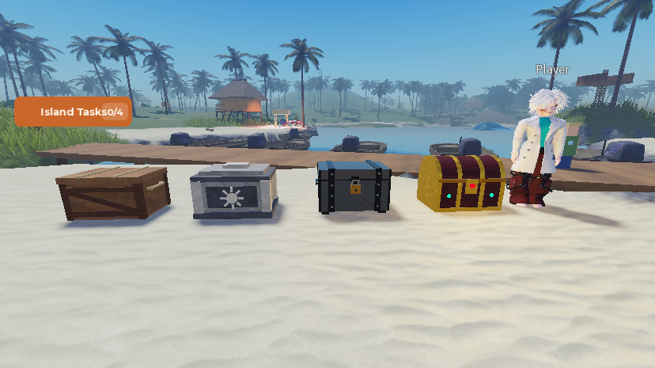
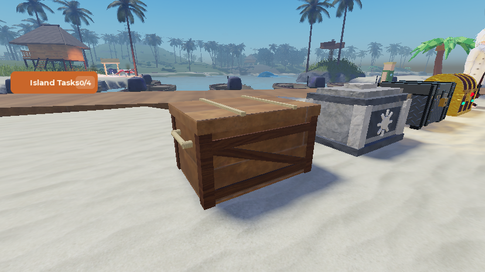
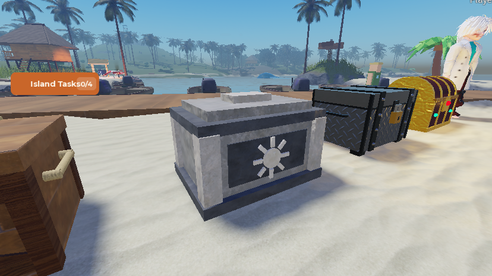
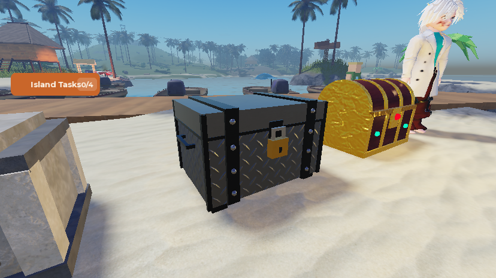
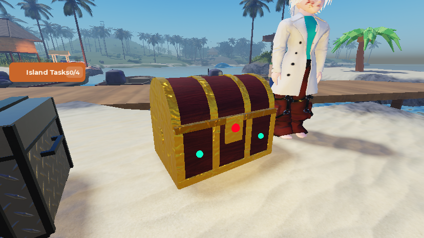
| Tier (key) | Health | Storage | Price | Upgrade from the tier below | Model (studs) |
|---|---|---|---|---|---|
Kahon (wood) | 100 | 30 slots | free | – | 4.6 × 2.6 × 3.4 |
Bato (stone) | 200 | 60 slots | 3,000 | 3,000 | 4.6 × 3.0 × 3.4 |
Bakal (steel) | 350 | 120 slots | 8,000, or the Stone Bodega pass | 5,000 | 4.6 × 2.8 × 3.4 |
Ginto (gold) | 500 | 250 slots | 20,000, or the new Ginto pass | 12,000 | 4.6 × 3.2 × 3.4 |
- The tier keys stay
woodandstonefrom the hut days, so saved profiles need no migration: a player who bought stone has a Bato now. - Upgrades go one tier at a time and cost the difference, so Ginto costs 20,000 in total however it is reached. Nothing asked for skipping tiers, and the UI stays one button.
- Each model is built from parts. Its
PrimaryPartis an invisible hitbox, and its pivot is the middle of its base, facing −Z.
2. Opening, placing, and upgrading in place
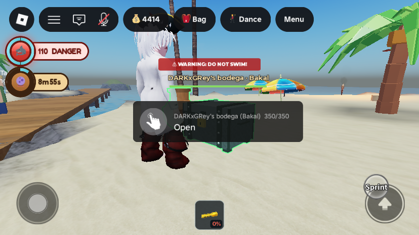
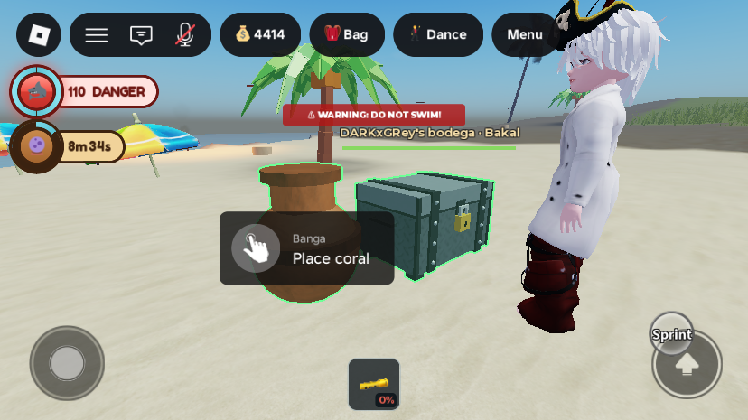
- Opening: the huts had a storage box inside, with a line-of-sight prompt so the walls enforced "go inside". A chest has no inside, so the Open prompt sits on the chest, with line of sight off (the chest's own lid would block it) and a range of 8. GearHud still shows it to the owner only.
- Placing: the chest goes down 3 studs in front of the player (the huts: 10). It must be at least 10 studs clear of another bodega (the huts: 15). It needs ground within about a stud of level across it. Someone standing within 1.5 studs of where it lands blocks it (the huts: 4).
- Upgrading works from anywhere: a chest that is up is rebuilt as the new tier where it stands, at full health, with its banga. Before, a player had to pack up and place again.
- Pass tiers: owning the Stone Bodega pass (
CabinBuilder) now gives Bakal, andGintoBodegagives Ginto. A granted tier that beats the one bought is written into the profile with full health, the first time it applies. That happens on join, or when the pass is bought, since BodegaService listens to the pass attributes. The Ginto pass has id 0 until it is made on the Creator Dashboard in Phase 9, so nobody owns it yet. - Axe: back to 1 point a swing (the quick-test 20 is gone). A lone thief needs 100 swings on a Kahon and 500 on a Ginto. The axe already measured reach to the hitbox, so a small chest needed no change there.
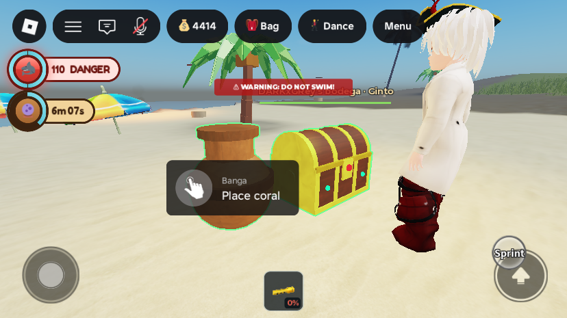
3. Storage limits
- The hoard used to be unlimited. Stowing is now capped at the tier's capacity, counted in the same slots as the bag (an O2 tank is 2, a glowstick 0.2, the binoculars nothing). A full chest refuses with: "Your Bakal is full (120 of 120 slots) -- a Ginto holds 250."
- Nothing is lost: a hoard already over its new limit keeps everything and just takes nothing more until it's under. Bound items (axe, binoculars) are always kept, and a break-in spills everything as before.
4. The bag's Bodega tab
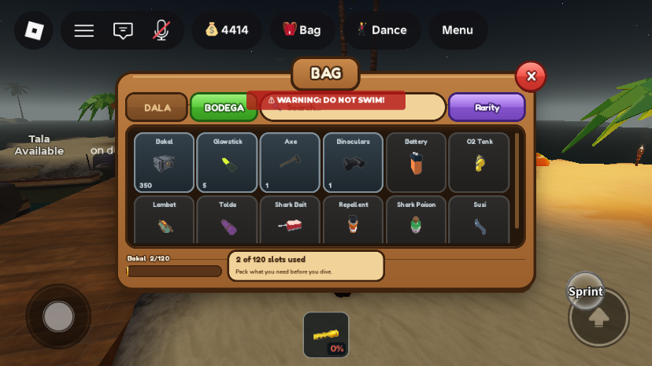
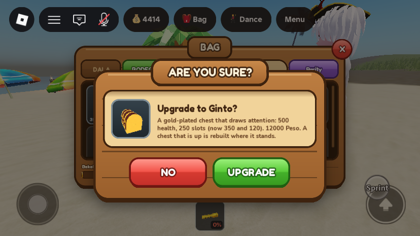
- The footer bar used to be health. It is now storage used, gold, turning red when full. The idle line reads "2 of 120 slots used" instead of "Unlimited storage".
- The chest tile draws your tier's chest and shows its health. Selecting it gives REPAIR (when damaged and at the chest) and UPGRADE (whenever there is a next tier, confirmed through the kit's dialog). Before, the button only knew about stone.
- New icons
ReplicatedStorage.ItemIcons.bodega_wood / _stone / _steel / _gold.ItemIcongained an opt-inIconYawattribute that turns its camera round a model. The chest icons use 75° so they show the front; otherwise the camera saw each chest's side and back. No other icon has the attribute, so none changed.
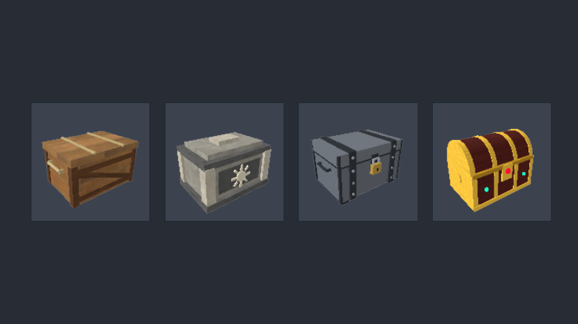
All changes
| Instance | Change | |
|---|---|---|
ServerStorage.ItemAssets.BodegaKahon, BodegaBato, BodegaBakal, BodegaGinto | new | The four chest models (20–46 parts each, plus Hitbox as PrimaryPart; its PivotOffset puts the pivot at the base). The Ginto has a PointLight and a GoldSparkle ParticleEmitter. |
ReplicatedStorage.ItemIcons.bodega_wood, _stone, _steel, _gold | new | Icon copies of the chests (no hitbox), with IconYaw = 75. |
ReplicatedStorage.ItemConfig | edit | Bodega.AxeDamage 20 → 1 and its comment. BodegaTiers rewritten (rank, label, look, asset, maxHealth, capacity, price, passKey) with the new steel and gold. New BodegaTierOrder and NextBodegaTier(key). |
ServerScriptService.BodegaService | edit | Chest-sized placement numbers. The walk-in StorageBox is gone, and the Open prompt is on the hitbox. spawnFor is split into build plus placement. New passTier, tierOf, publishTier (attributes BodegaTier, BodegaMaxHealth, BodegaCapacity, BodegaHealth) and rebuildInPlace. The "upgrade" action replaces "upgradeStone". Join waits for pass ownership, and pass attributes are listened to. New name tag, prompt text and startup line. Studio-only hook ServerStorage.DebugBodega: (player, "tier", key, health?) and (player, "report"). |
ServerScriptService.InventoryService | edit | New bodegaRoomFor. Stowing (RequestTransfer "toBodega") stops at the capacity and says so. Comments updated. |
StarterPlayer.StarterPlayerScripts.BagHud | edit | The Bodega tab footer shows storage. The chest tile is redrawn per tier. UPGRADE opens a K.confirm and sends "upgrade". It listens to BodegaTier and BodegaCapacity. |
ReplicatedStorage.ItemIcon | edit | Optional IconYaw attribute on a source turns the camera about the vertical. |
ServerScriptService.GamePassService | edit | New IsLoaded(player). ApplyPerks mirrors GintoBodega to an attribute. Perk comments updated. |
ServerScriptService.MonetizationConfig | edit | CabinBuilder is now named and described as "Bakal na Bodega" in the game's config; the Dashboard name is still "Stone Bodega" until Phase 9. New GintoBodega entry (id 0, suggested 299 R$). Nothing lists passes to players, so the id-0 entry is inert. |
ServerScriptService.AdminService | edit | The admin test-pass switch (SetTestPass) accepts CabinBuilder and GintoBodega. |
ServerStorage._Retired.ServerStorage_ItemAssets__Bodega, ServerStorage_ItemAssets__BodegaStone, ReplicatedStorage_ItemIcons__bodega | retired | The old wooden hut, the stone storehouse and the hut icon. Every script was scanned first; only BagHud used the icon, and that line was rewritten. |
No new remotes. Every edited script was compile-checked with loadstring. The preview chests, the avatar stand-in and the temporary icon check panel used for screenshots were removed, and the Edit clock was set back to 00:00.
Testing
Two playtests on MERS_Cov2 (display name DARKxGRey), each ended by kicking the player from the Server; Studio was then stopped from Play mode with nobody in it. There were no script errors.
- Pass goodwill, for real: the test account owns the Stone Bodega pass, so on join it was moved to Bakal: 350 health, 120 slots, its hoard using 2. This is the intended migration, and it stays.
- Placing: the Bakal went down 4.7 studs in front of the player, its lowest part exactly at ground height (4.82). It had its banga, the Open prompt,
OwnerId, andAtBodegaon. - Bodega tab: read "Bakal 2/120" and "2 of 120 slots used", with the Bakal chest on the tile.
- Upgrade refused: with 4,414 Peso,
"upgrade"gave "The Ginto costs 12000 Peso more than your Bakal." and the tier stayed Bakal. - Capacity: one glowstick packed out, the session's capacity lowered to 1.9 (1.8 stored). Stowing it was refused ("Your Bakal is full…"). With 120 back, it stowed. The hoard is unchanged.
- Pass grant and rebuild in place:
SetTestPass GintoBodega ongave "Your pass gives you the Ginto bodega -- 500 health, 250 slots." The chest was rebuilt as a Ginto 0.00 studs from where the Bakal stood, with its banga. - Pack and place again as a Ginto: packed in 10 s ("Everything inside is safe"), then placed again at the same spot.
- Put back: test pass off, then
DebugBodega "tier", "steel", 350. The chest rebuilt as a Bakal, 350/350, 120 slots. Peso was 4,414 before and after. - Found by testing and fixed: the "full" message quoted the tier's capacity instead of the number actually checked. The icon camera showed each chest's back and side, fixed with
IconYawand checked in the bag in the second playtest.
Gaps and things to check
- A paid upgrade was not bought. The refusal was tested, and the pass path runs the same tier write and in-place rebuild. A real purchase was skipped because the money goes to the Community Fund, whose lifetime total is saved across all servers, so a test purchase would add real money to it.
- Needs two players:
- chopping a chest with the axe (now 1 per swing), the break-open spill at chest size, and repairs;
- whether the smaller spacing (10 studs) is too tight next to someone else's chest;
- a second bodega (the Extra Bodega Slot pass): two chests sharing one hoard and health should still work, since the code path is unchanged.
- Not tested: the Open prompt itself was not pressed (the bag was opened with the same remote the prompt sends). Placing on slopes wasn't tried: the rise allowed across a chest is about a stud, which may refuse some sloped sand that a hut accepted.
- Over-limit hoards were not tried with a real big hoard. The rule (keep everything, take nothing more) is in
bodegaRoomFor. - Phase 9 to-dos: rename the Stone Bodega pass on the Dashboard ("Bakal na Bodega"), and create the Ginto pass, then put its id in
MonetizationConfig.GintoBodega. - Old style left: the floating name tag and life bar over a chest are still the old native-instance style. They weren't part of the approved kit screens, but they could be restyled.
- Quick-test values:
Bodega.AxeDamage = 20is gone (now 1). No new ones were added.